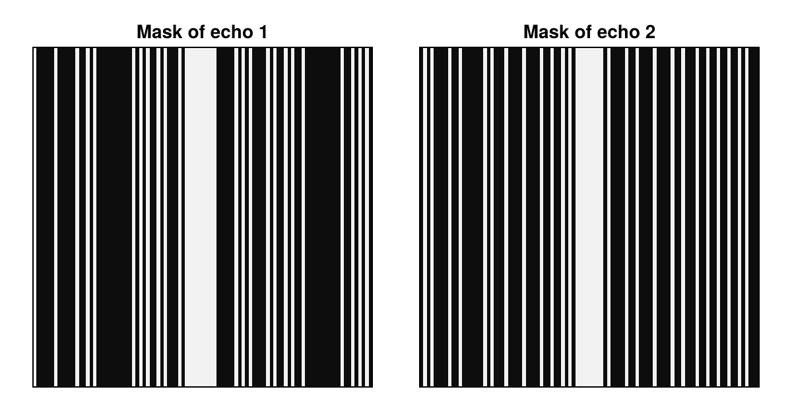
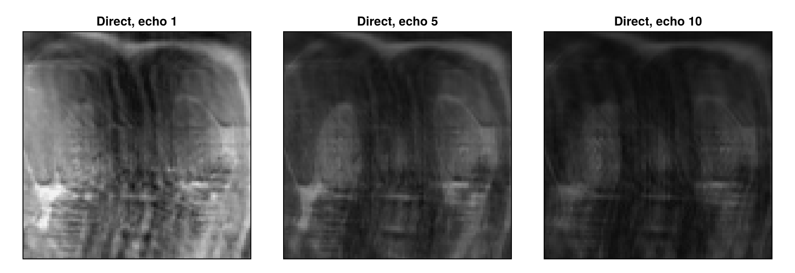
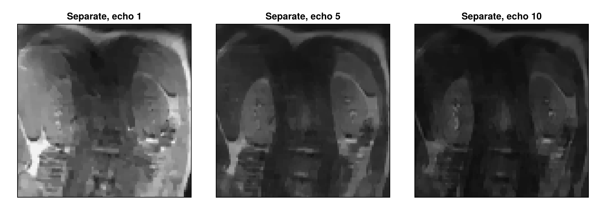
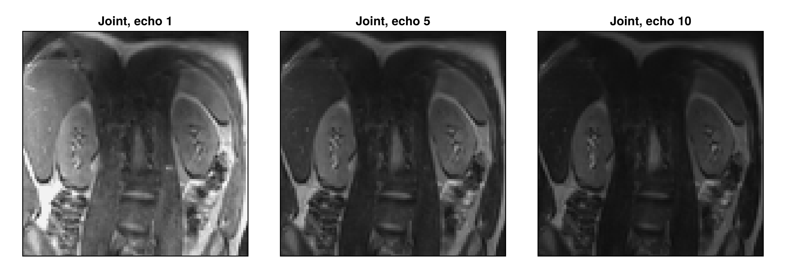
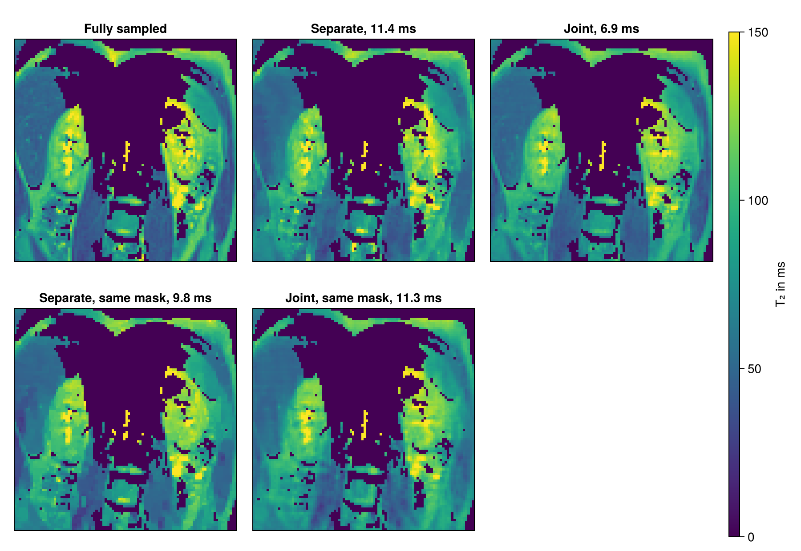

Multi-Echo Reconstruction
A multi-echo spin-echo acquisition measures the same slice at several echo times. The signal decays from echo to echo at a rate that depends on the tissue, so that the series of images reveals the relaxation time $T_2$ of each voxel. The acquisition takes long because it repeats the echo train for every profile, and undersampling shortens it. Since all echo images show the same anatomy, they share much of their information. This tutorial undersamples a measured multi-echo series, reconstructs it first each echo on its own and then all echoes jointly with the reconstruction type "multiEcho", and computes $T_2$ maps from the results.
Besides MRIReco, the tutorial needs MRIFiles to read the data, MRISampling to undersample it and CairoMakie for the plots. The plotting function is the one from Direct Reconstruction, but it also passes keywords on to the heatmap.
using MRIReco, MRIFiles, MRISampling, CairoMakie
function showimages(images, titles; columns = length(images), kwargs...)
fig = Figure(size = (300 * columns, 310 * cld(length(images), columns)))
for (i, (image, title)) in enumerate(zip(images, titles))
ax = Axis(fig[fldmod1(i, columns)...], title = title,
aspect = DataAspect(), yreversed = true)
heatmap!(ax, image'; colormap = :grays, kwargs...)
hidedecorations!(ax)
end
return fig
endThe Data
The data is one slice of a multi-echo spin-echo series of the kidneys, measured at 3 T and published by A. J. Daniel under the CC BY 4.0 license. It has ten echoes and $96 \times 96$ voxels of 3 mm in the image plane, with a slice thickness of 5 mm. The published series consists of magnitude images, not raw data. The file used here therefore holds the Fourier transform of these images as the k-space data of one coil, scaled so that the maximum of the first echo is 1. Its header contains the echo times in ms:
using Pkg.Artifacts
artifacts = joinpath(pkgdir(MRIReco), "docs", "Artifacts.toml")
datadir = ensure_artifact_installed("MRIRecoDocsData", artifacts; io = devnull)
rawData = RawAcquisitionData(ISMRMRDFile(joinpath(datadir, "kidney_MESE_slice3.h5")))
echoTimes = rawData.params["TE"]10-element Vector{Float64}:
12.9
25.8
38.7
51.6
64.5
77.4
90.3
103.2
116.1
129.0Each echo is one contrast of the acquisition data:
acqData = AcquisitionData(rawData)
numContrasts(acqData), numChannels(acqData)(10, 1)The echoes are the fourth of the six dimensions of the reconstructed image, so we keep this dimension. The direct reconstruction of the fully sampled data returns the measured images, which serve as the reference for everything below. We look at the echoes 1, 5 and 10 throughout this tutorial. In a common gray scale, the tissue with a short $T_2$ fades first:
params = Dict{Symbol, Any}()
params[:reco] = "direct"
params[:reconSize] = (96, 96)
echoStack(images) = abs.(images[:, :, 1, :, 1, 1])
referenceImages = echoStack(reconstruction(acqData, params))
shownEchoes = [1, 5, 10]
showechoes(images, label) = showimages([images[:, :, e] for e in shownEchoes],
["$label, echo $e" for e in shownEchoes],
colorrange = (0, 0.7))
showechoes(referenceImages, "Fully sampled")Undersampling
We undersample the series retrospectively, that is, we remove samples from the fully sampled data, as Zhang et al. do. We keep a third of the profiles of each echo, chosen by Poisson-disk sampling, with the 8 profiles in the center of k-space always included. With its default rand = true, sample_kspace uses a different pattern for each contrast, so the masks of the first two echoes differ outside of the center:
acqDataSub = sample_kspace(acqData, 3.0, "poisson", calsize = 8, seed = 1234)
function samplingMask(data, echo)
mask = zeros(96, 96)
mask[data.subsampleIndices[echo]] .= 1
return mask
end
showimages([samplingMask(acqDataSub, 1), samplingMask(acqDataSub, 2)],
["Mask of echo 1", "Mask of echo 2"])
We compare all results with the fully sampled images by nrmsd. The direct reconstruction of the undersampled data is blurred and shows vertical stripes, because profiles are missing along the horizontal direction:
directImages = echoStack(reconstruction(acqDataSub, params))
deviation(images) = round(nrmsd(referenceImages, images), sigdigits = 2)
showechoes(directImages, "Direct")
Reconstructing Each Echo on Its Own
The reconstruction type "standard" handles the contrasts independently of each other. We use it with total variation regularization, whose weight λ is the first argument of TVRegularization, and the solver POGM, an accelerated proximal gradient method. For POGM, :rho is the step size. Values close to 1 would also work here, but the joint reconstruction below gives more stable results with small steps, so we set it to 0.05 and use more iterations. As in Iterative Reconstruction, we also scale λ with MeasurementBasedNormalization, which with POGM uses the back-projected data, here of each echo separately. The regularization reduces the stripes, but also smooths fine structures:
totalVariation = TVRegularization(0.01, shape = (96, 96))
params = Dict{Symbol, Any}()
params[:reco] = "standard"
params[:reconSize] = (96, 96)
params[:solver] = POGM
params[:rho] = 0.05
params[:reg] = totalVariation
params[:normalizeReg] = MeasurementBasedNormalization()
params[:iterations] = 200
separateImages = echoStack(reconstruction(acqDataSub, params))
showechoes(separateImages, "Separate")
Joint Reconstruction
The reconstruction type "multiEcho" treats the images $\mathbf{x}_e$ of all echoes $e$ as one unknown and solves
\[\underset{\mathbf{x}_1, \ldots, \mathbf{x}_{N_e}}{\operatorname{argmin}} \; \frac{1}{2}\sum_{e} \lVert \mathbf{F}_e\mathbf{x}_e - \mathbf{b}_e \rVert_2^2 + \mathrm{R}(\mathbf{x}_1, \ldots, \mathbf{x}_{N_e}),\]
where $\mathbf{F}_e$ applies the Fourier transform, scaled to be unitary, and keeps the samples measured for echo $e$, and $\mathbf{b}_e$ holds these samples with the same scaling. Only a regularization $\mathrm{R}$ that couples the echoes makes this problem different from reconstructing them one by one with the same weight.
A locally low-rank regularization, as Zhang et al. use it for parameter mapping in a similar form, is such a term. It divides the images into small blocks and forms for each block a matrix with one row per voxel and one column per echo. The decay curves of nearby voxels are similar, so that a few singular values describe this matrix well. Noise and artifacts that differ from echo to echo raise the smaller singular values. The regularization therefore penalizes the sum of the singular values in every block, with a weight set by λ. We use blocks of $8 \times 8$ voxels, like the final blocks of Zhang et al. As with their changing partition of the images, the random shift of the blocks in every iteration, which LLRRegularization applies by default, avoids a block pattern in the result. It also lets the result vary slightly from one reconstruction to the next, less so with small steps:
params[:reco] = "multiEcho"
params[:reg] = LLRRegularization(0.1, shape = (96, 96), blockSize = (8, 8))
jointImages = echoStack(reconstruction(acqDataSub, params))
showechoes(jointImages, "Joint")
The stripes are almost gone and fine structures stay sharp, and the deviation from the fully sampled images drops clearly:
(direct = deviation(directImages), separate = deviation(separateImages),
joint = deviation(jointImages))(direct = 0.048, separate = 0.034, joint = 0.012)The Role of the Sampling Masks
The gain depends strongly on the sampling masks. With different masks, nearly every profile is measured in some echo. With rand = false, all echoes share one sampling mask, so that two thirds of the profiles are measured in no echo. The artifacts then have nearly the same structure in all echoes and stay in the largest singular values, so that the regularization removes much less of them:
acqDataSameMask = sample_kspace(acqData, 3.0, "poisson", calsize = 8, seed = 1234,
rand = false)
jointSameMask = echoStack(reconstruction(acqDataSameMask, params))
showechoes(jointSameMask, "Joint, same mask")The separate reconstructions, in contrast, do not use differences between the masks: total variation reduces the artifacts within each image. With one mask for all echoes, they deviate less than the joint reconstruction:
params[:reco] = "standard"
params[:reg] = totalVariation
separateSameMask = echoStack(reconstruction(acqDataSameMask, params))
(joint = deviation(jointSameMask), separate = deviation(separateSameMask))(joint = 0.042, separate = 0.035)A conventional multi-echo spin-echo sequence uses the same phase encoding for all echoes of a train, which corresponds to rand = false. Different masks require a sequence that changes the phase encoding from echo to echo, as Liu et al. do. Here, we only simulate this by removing samples.
Computing T₂ Maps
Often, the echo images are only a means to obtain the $T_2$ map. We assume that the signal of each voxel decays exponentially with the echo time $T_E$ from a value $S_0$,
\[S(T_E) = S_0 \, e^{-T_E / T_2}.\]
Real echo trains deviate from this model, for example through stimulated echoes, but it is enough to compare reconstructions. The logarithm of the model is linear, $\log S(T_E) = \log S_0 - T_E / T_2$, and we fit it for all voxels at once by least squares. The fit can return negative values and values far above the last echo time, which are unreliable, so we limit $T_2$ to the range from 0 to 300 ms. The fit is also unreliable at low signal, so we keep only the voxels with more than 20 % of the maximum of the first echo and show the others as 0 ms. The titles show the mean absolute deviation from the map of the fully sampled images:
function fitT2(images)
A = [ones(length(echoTimes)) -echoTimes]
coefficients = A \ reshape(log.(max.(images, eps(Float32))), :, length(echoTimes))'
return reshape(clamp.(1 ./ coefficients[2, :], 0, 300), 96, 96)
end
reliable = referenceImages[:, :, 1] .> 0.2
referenceT2 = fitT2(referenceImages)
meanDeviation(t2) = round(sum(abs, t2[reliable] .- referenceT2[reliable]) / count(reliable),
digits = 1)
maps = fitT2.([separateImages, jointImages, separateSameMask, jointSameMask])
labels = ["Separate", "Joint", "Separate, same mask", "Joint, same mask"]
titles = ["$label, $(meanDeviation(t2)) ms" for (label, t2) in zip(labels, maps)]
fig = showimages([t2 .* reliable for t2 in [referenceT2, maps...]],
["Fully sampled", titles...],
columns = 3, colormap = :viridis, colorrange = (0, 150))
Colorbar(fig[:, 4], colormap = :viridis, limits = (0, 150), label = "T₂ in ms")
fig
From a third of the samples, the joint reconstruction comes closest to the map of the fully sampled images, as long as the masks differ. With one mask, the separate reconstructions come closer.
These results have limits. For both iterative reconstructions, we chose λ by comparing a few values with the fully sampled images, which is not possible when the data is undersampled during the measurement. And evaluating reconstructions on magnitude images tends to give overly optimistic results (Shimron et al.), so the gain on raw data may be smaller.
Next Steps
- With several coils,
"multiEcho"reconstructs the echo images of each coil separately. Multi-Coil Multi-Echo and Subspace Reconstruction reconstructs one image per echo from all coils with"multiCoilMultiEcho"and exploits the same redundancy with a fixed temporal basis. - The RegularizedLeastSquares.jl documentation describes the available solvers and regularization terms.
- The API reference describes
reconstructionandsample_kspace.
This page was generated using Literate.jl.